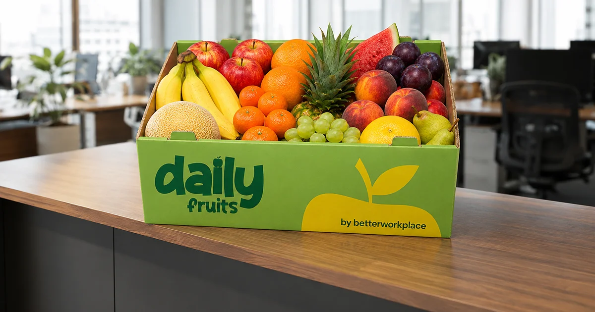

28 kwietnia 2026
Poradnik

Kanapki do biura — jak zaplanować catering na każdy dzień
Dostawki kanapek to praktyczne rozwiązanie dla biur, gdzie zespół pracuje na intensywnym harmonogramie i nie ma czasu na wychodzenie na obiad. Ale jak organizować catering, aby był efektywny logistycznie, a owoce były świeże i różnorodne? W tym artykule pokazujemy praktyczne kroki.
Dlaczego kanapki do biura?
Catering kanapkowy to rozwiązanie dla firm, które chcą:
- Oszczędzić czas zespołu – pracownicy jedzą w biurze, nie wychodzą na lunch
- Kontrolować koszty – catering jednostkowy jest droższy niż grupa
- Budować integrację – wspólny posiłek wzmacnia relacje w zespole
- Wpływać na produktywność – sycące kanapki to lepsze fokus po południu
Rodzaje kanapek: od klasycznych do fit
Dobry catering offeruje różnorodność. Standardowo wybieramy:
- Klasyczne: szynka, ser, masło, warzywę – uniwersalne
- Fit/Light: pierś kurczaka, warzywa, hummus – dla zdrowotników
- Wegetariańskie: ser, jajko, warzywę, oliwa – dla osób na diecie
- Wegańskie: hummus, awokado, warzywa – roślinne opcje
Rekomendacja: zamawiai mieszane koszyki z proporcją 40% klasyki, 30% fit, 20% wegetariańskie, 10% specjalne. To pokryje potrzeby całego zespołu.
Ilość kanapek na osobę
Zależy od czasu dostawy i dodatkowych opcji:
- Jeśli jedynym posiłkiem jest kanapka: 2 sztuki na osobę
- Jeśli jest dostępne owoce, sałata lub inne dodatki: 1,5 sztuki na osobę
- Dla zespołu 20 osób: zamawiamy 30–35 kanapek
Logistyka dostawki kanapek
Kluczowe punkty:
- Częstotliwość: 1–2 razy tygodniowo (zwykle wtorek/czwartek)
- Pora dostawy: między 11.30 a 12.00 – pracownicy mogą zjeść przed spotkaniami
- Przechowywanie: kanapki żyją max 4–6 godzin w temperaturze pokojowej
- Opakowanie: kompostowalne pudełka, papierowe opakowania
Integracja owoców i kanapek w jeden program
Najinteligentniejsze biura łączą owoce i kanapki u jednego dostawcy. Korzyści:
- Jedna dostawa zamiast dwóch – oszczędzamy czas i pieniądze na logistyce
- Jedno invoice zamiast kilku
- Koordynacja opakowania – wszystko kompostowalne
- Lepsze ceny – dostawcy oferują rabaty na pakiety combo
Przechowywanie i dystrybucja
Praktyczne wskazówki:
- Kanapki trafiają do lodówki pracowniczej zaraz po dostawie
- Owoce do pojemnika w kuchni – drażnią naturalnie, nie trzeba ich odkładać
- Wyznacz osobę odpowiedzialną za sprzątanie po posiłku
Catering to inwestycja w morale zespołu. Pracownicy, którzy czują się o nich dbanym, wykazują wyższe zaangażowanie. A kombinacja zdrowszych kanapek z owocami sprawia, że zespół ma energię do pracy przez cały dzień.
← Wróć do wszystkich artykułów